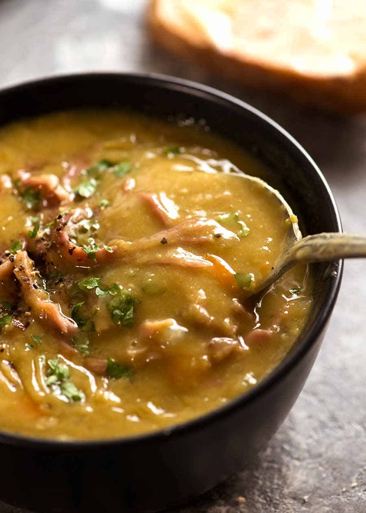

Pea & Ham Soup

What is Pea & Ham Soup?
The name says it all. It is a staple dish in many cuisines and cultures. It is thought to have originated from Ancient Greece or Ancient Rome and as far back as 500-400 BCE.
Ingredients
- ~750g ham bone
- 1.5 cups of green split peas
- Bay leaves
- 3 cloves of crushed garlic
- 2 carrots chopped
- 2 sticks celery trimmed chopped
- 1 onion chopped
- 6 cups of water
- Salt and pepper to season
Steps
- Rinse split peas under cold running water until water runs clear. Drain.
- Heat oil in a saucepan over medium heat. Add carrot, celery, onion and garlic, and cook, stirring, for 5 minutes or until the onion softens.
- Add split peas, ham bone and water. Bring to the boil over high heat. Reduce heat to medium-low and simmer, covered, for 2 - 2 1/2 hours or until ham hocks are tender and the meat is falling away from the bones. Set aside for 5 minutes to cool slightly. Remove ham hocks from
pan. Remove the meat from bones. Coarsely chop meat and set aside.
- Place one-quarter of the pea mixture in the bowl of a food processor and process until smooth. Return to pan with ham.
Repeat with remaining pea mixture. Taste and season with salt and pepper. Stir over medium-high heat for 5 minutes or until hot.
- Ladle soup into bowls and enjoy!
Return Home